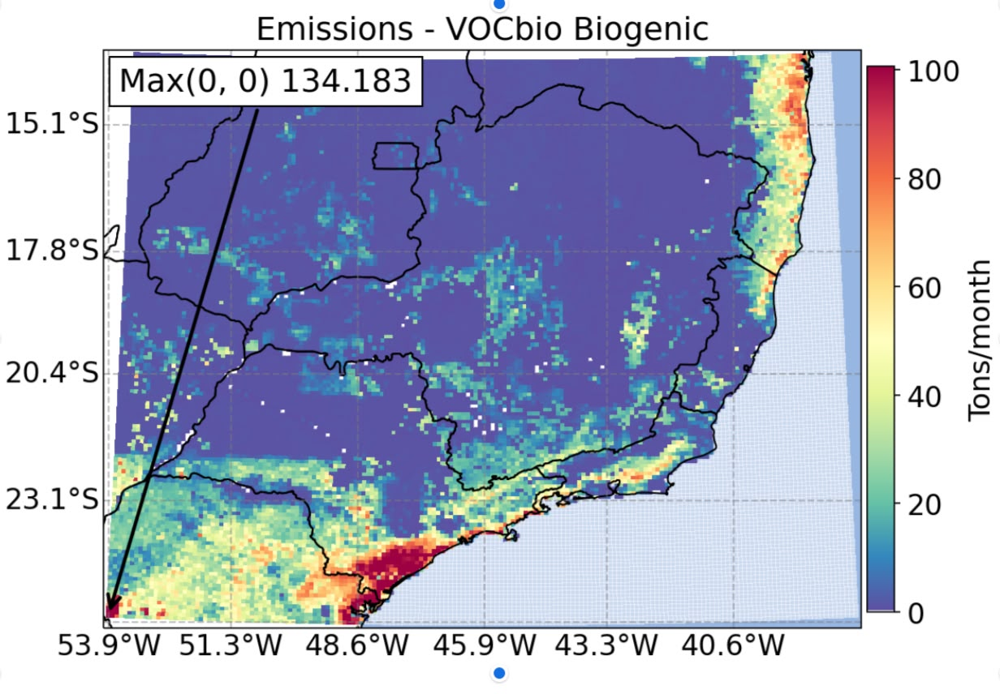
01
Emissões
Processamento de dados ambientais utilizando modelagem computacional, algoritmos inteligentes e análise estatística aplicada.

Instituições
de Pesquisa
Empresas
Privadas
Pesquisadores
Bolsistas
O projeto "Estudo do impacto e da contribuição das fontes das emissões veiculares, de fontes fixas e de distribuição de gasool na formação do ozônio troposférico no eixo São Paulo-Belo Horizonte" (Projeto O₃ MOVER) integra análise computacional, técnicas experimentais ambientais e pesquisa científica para compreender impactos atmosféricos e subsidiar soluções para a qualidade do ar.

Processamento de dados ambientais utilizando modelagem computacional, algoritmos inteligentes e análise estatística aplicada.
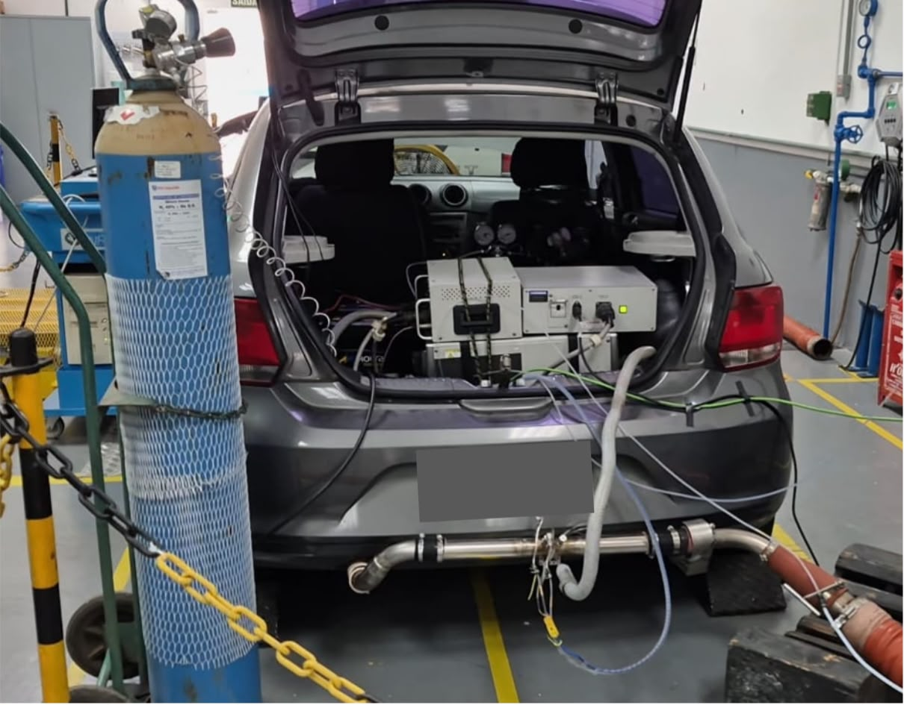
Investigação e caracterização experimental das emissões de escapamento e evaporativas de veículos movidos a etanol e gasolina, por meio de ensaios laboratoriais e medições em condições reais de uso.
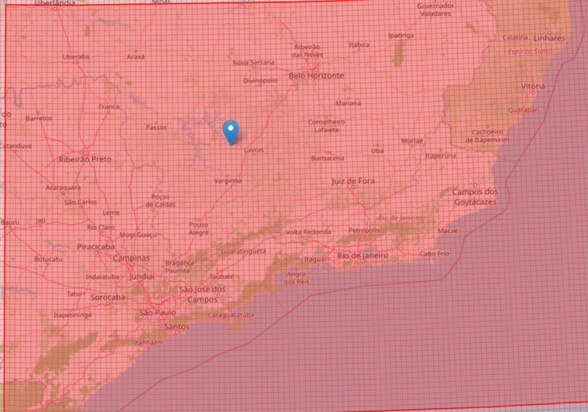
Simulação da qualidade do ar para avaliar a contribuição das diferentes fontes de emissão para a poluição atmosférica e investigar os impactos de cenários futuros de combustíveis, tecnologias veiculares e estratégias de redução de emissões na região de estudo.
Estudar as emissões da exaustão e evaporação veicular de etanol e gasolina, em laboratório e em condições reais de circulação.
Divulgar e disseminar os conhecimentos gerados pela pesquisa e contribuir para a formação de recursos humanos na área.
Simular cenários de redução das emissões de diferentes compostos orgânicos para avaliar seus impactos nas concentrações de ozônio troposférico na região.
Avaliar como as emissões de veículos e das etapas de produção, distribuição e abastecimento de gasolina/etanol contribuem para as concentrações de ozônio troposférico.
Modelar as concentrações de ozônio troposférico no eixo SP-BH.
O Projeto O₃ MOVER reúne pesquisadores, estudantes e colaboradores de diversas universidades brasileiras voltadas à pesquisa, tecnologia, sustentabilidade e inovação ambiental.
Desenvolvimento científico e tecnológico aplicado ao monitoramento atmosférico e análise ambiental.
Docente titular da UTFPR, bolsista de produtividade em pesquisa do CNPq e Coordenadora Geral (COG) do Projeto O3 MOVER. Atua na área de química da atmosfera, com ênfase em qualidade do ar, formação de ozônio troposférico e modelagem atmosférica.
Doutora em Meteorologia pelo IAG-USP, Mestre e Bacharel em Engenharia Ambiental pela UTFPR. Atua no projeto com inventários de emissões, desenvolvimento de softwares, modelagem atmosférica e análise estatística, com foco na relação entre poluição do ar, clima e saúde humana.
Está sendo elaborado o inventário de emissões atmosféricas de fontes fixas do setor de distribuição e abastecimento de combustíveis veiculares a partir de dados públicos e solicitados para ANP e a elaboração de scripts em linguagem de programação python
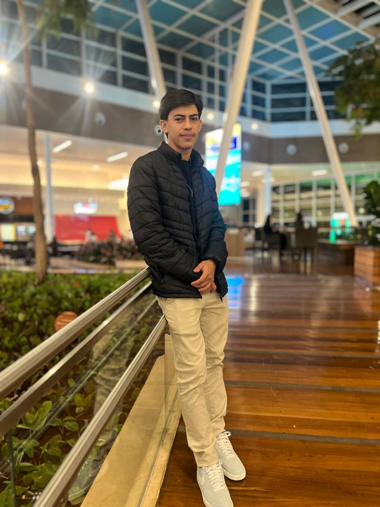
BGTrabalho no desenvolvimento do PEGA, software voltado à elaboração de inventários de emissões atmosféricas de fontes fixas, e na criação e manutenção do website do Projeto O₃ MOVER, contribuindo para a automação de processos e a divulgação científica.
Desenvolvimento e aplicação de modelos computacionais voltados à análise ambiental da poluição atmosférica, com processamento, organização e interpretação de dados. Utilização de programação para automatização de processos e apoio à elaboração de estudos e pesquisas científicas.
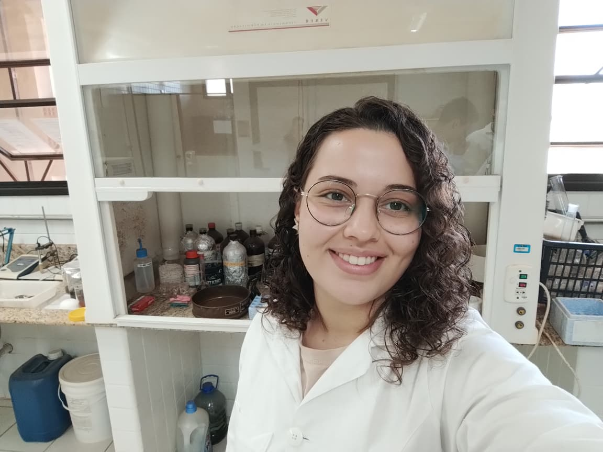
BGPesquisas em análise da qualidade do ar e acompanhamento de índices de poluição atmosférica. Monitoramento das concentrações de ozônio troposférico relacionando-os à dados de ondas de calor e de internações por doenças cardiorrespiratórias, utilizando de softwares e análises estatísticas de perfis históricos, correlação e métodos de regressão
Estou na graduação e atuo no projeto realizando análises químicas, coleta e organização de dados, auxiliando no desenvolvimento do website e na elaboração de orçamentos para aquisição de materiais, equipamentos e insumos necessários às atividades do projeto e do laboratório.
Doutor em Meteorologia pela USP e pesquisador vinculado à UTFPR, com experiência em modelagem numérica da atmosfera, hidrologia e instrumentação meteorológica. Integra o Projeto O₃ MOVER, contribuindo para pesquisas sobre emissões atmosféricas, qualidade do ar e formação de ozônio troposférico.
Instituto de Astronomia, Geofísica e Ciências Atmosféricas da Universidade de São Paulo.
Doutor em Meteorologia pela USP, especialista em inventários de emissões veiculares, química atmosférica e modelagem da qualidade do ar. Minha experiência no desenvolvimento de ferramentas computacionais, como o VEIN, contribui para os estudos do Projeto O₃ MOVER, especialmente na estimativa de emissões provenientes dos transportes e na simulação de seus impactos sobre a formação de ozônio troposférico.
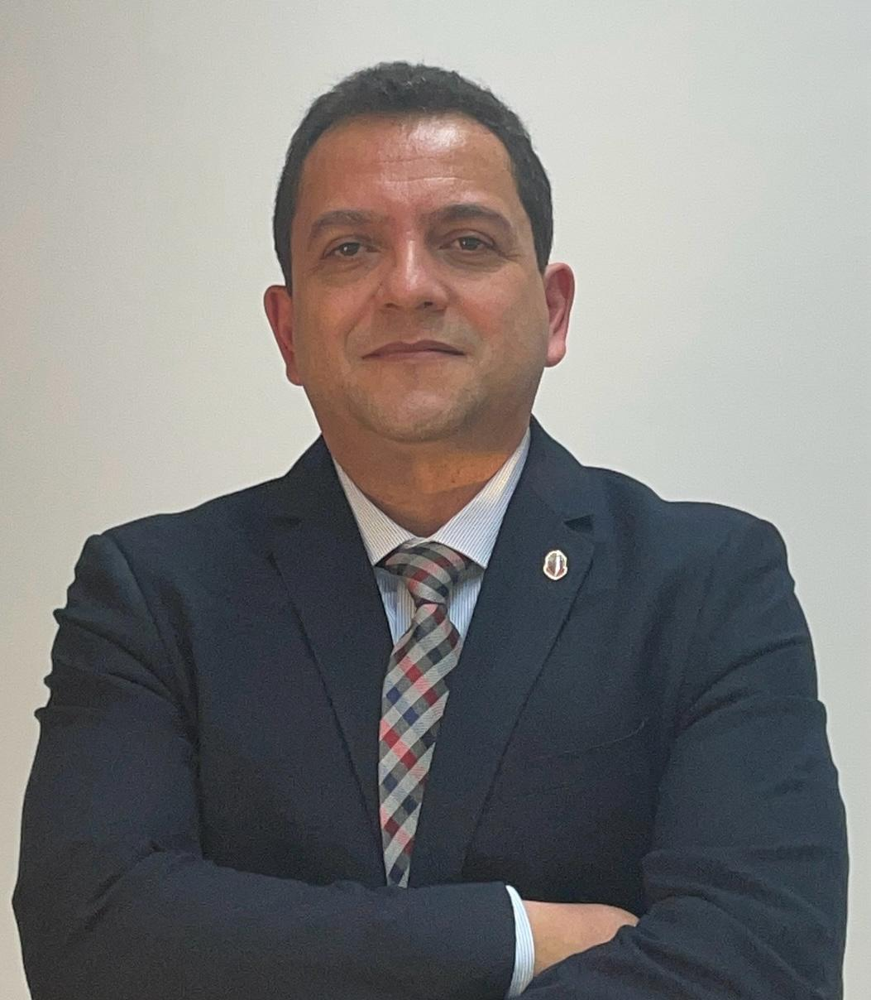
COAProfessor titular e pesquisador do IAG/USP, atuo no desenvolvimento e aplicação de modelos atmosféricos para avaliar a dispersão de poluentes e seus impactos na qualidade do ar. Minha experiência em simulações meteorológicas e processos fotoquímicos contribui para os estudos de emissões veiculares e formação de ozônio troposférico relacionados ao Projeto O₃ MOVER.
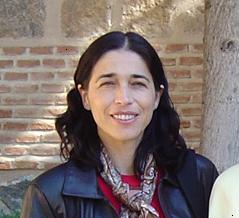
COAProfessora titular e pesquisadora do IAG/USP, especialista em química atmosférica, identificação de fontes poluidoras e modelagem da qualidade do ar. Integra o Projeto O₃ MOVER, contribuindo para os estudos sobre emissões veiculares e industriais, formação de ozônio troposférico e avaliação dos impactos dos poluentes atmosféricos na região Sudeste do Brasil.
Colaboração científica em pesquisa atmosférica e análise de dados ambientais.
Professora e pesquisadora da UFMG, atua em estudos de qualidade do ar, modelagem atmosférica e avaliação da poluição atmosférica. Desenvolve pesquisas sobre dispersão de poluentes, formação de poluentes secundários e estratégias de controle de emissões, contribuindo para o diagnóstico e a melhoria da qualidade do ar.
Professor adjunto da Universidade Federal de Minas Gerais (UFMG), com atuação em química ambiental, instrumentação analítica e monitoramento de poluentes atmosféricos. Minha experiência na caracterização química de gases, compostos orgânicos voláteis e material particulado contribuindo para os estudos de emissões e qualidade do ar desenvolvidos no Projeto O₃ MOVER.
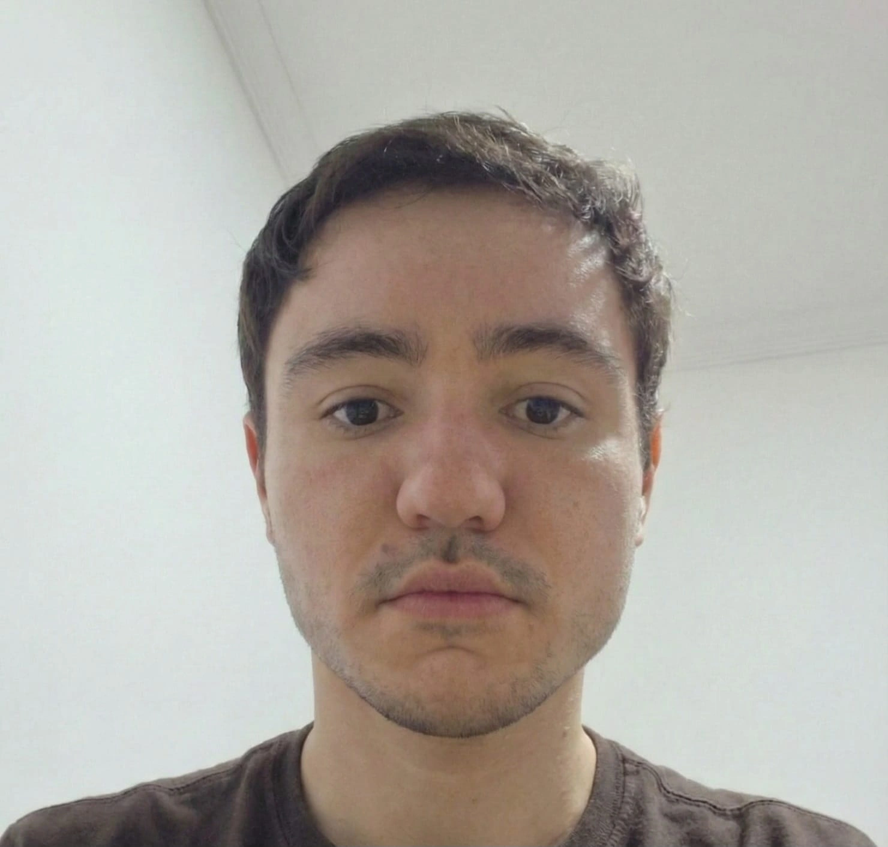
BM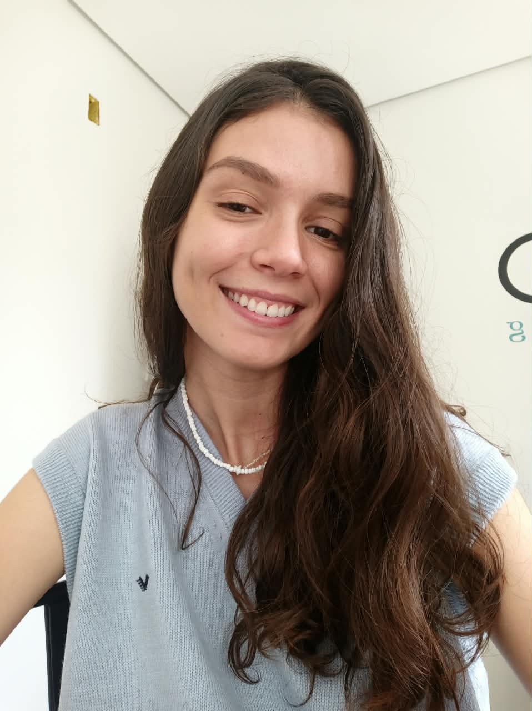
BGAtua no levantamento, organização e análise de dados para a elaboração de inventários de emissões atmosféricas provenientes de tanques de armazenamento de combustíveis em refinarias, utilizando o modelo TANKS para estimar e quantificar as emissões de compostos orgânicos voláteis (COVs).
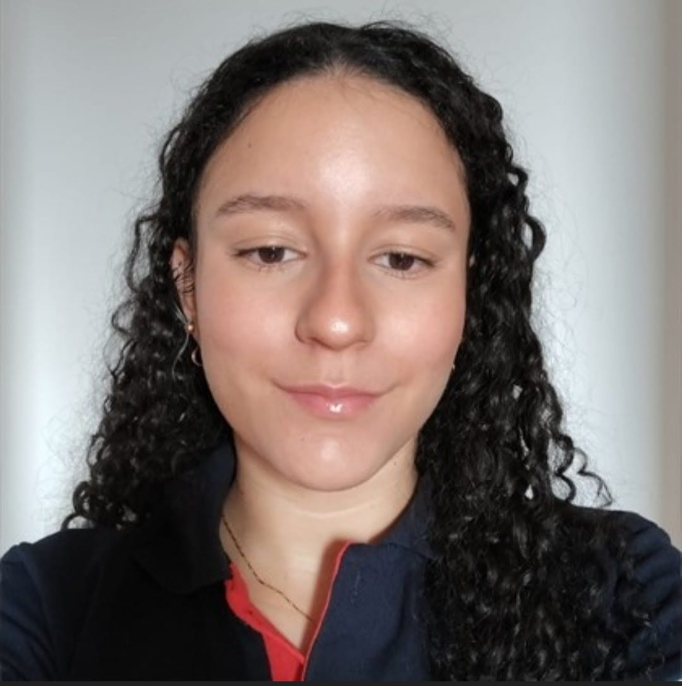
BITOrganizar e tratar os dados de concentração de ozônio e de material particulado monitorados pela rede de qualidade do ar de Minas Gerais no período de 2020 a 2025 para criação de um banco de dados que integre as emissões atmosféricas de variadas fontes, as estações de qualidade do ar localizadas em áreas específicas do Estado e os desfechos de saúde do DATASUS.
Atuo no levantamento, organização e análise de dados sobre emissões de poluentes e qualidade do ar, avaliando a relação entre a poluição atmosférica e seus possíveis impactos na saúde da população, por meio de análises estatísticas e ambientais.
Atuo na amostragem e análise de emissões veiculares, realizando coletas, preparo e análise de amostras por técnicas cromatográficas (GC-MS e LC-MS), além do processamento e interpretação dos dados para identificar e quantificar poluentes e avaliar sua relação com a formação de ozônio.
Apoio ao desenvolvimento tecnológico e integração de sistemas computacionais.
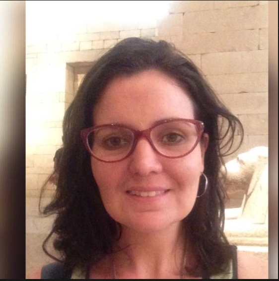
COAProfessora associada da Universidade Federal de Itajubá (UNIFEI) e bolsista de produtividade em pesquisa do CNPq, com experiência em modelagem atmosférica, química da atmosfera e avaliação da qualidade do ar. Integra o Projeto O₃ MOVER, contribuindo com sua expertise na simulação de processos atmosféricos e na investigação da formação e dispersão do ozônio troposférico.
Trabalho na programação e desenvolvimento de resultados, criando ferramentas e rotinas computacionais para processar, organizar e analisar dados ambientais. Desenvolve soluções para automatizar análises, gerar gráficos, mapas e outros resultados, contribuindo para a interpretação e apresentação dos dados das pesquisas.
Pesquisa aplicada à sustentabilidade urbana e monitoramento ambiental.
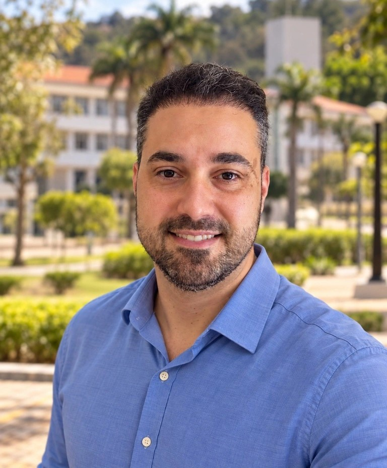
COAProfessor e pesquisador da Universidade Federal de Viçosa (UFV), atuo na modelagem atmosférica, no processamento de inventários de emissões e na avaliação da dispersão de poluentes. Minha experiência com os modelos WRF, CMAQ e SMOKE contribui para os estudos do Projeto O₃ MOVER, especialmente na simulação dos impactos das emissões veiculares sobre a qualidade do ar e a formação de ozônio troposférico.
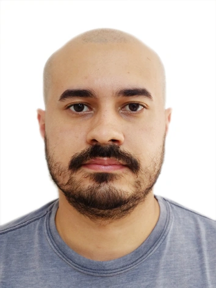
BI4Doutor em Engenharia Ambiental pela UERJ, com experiência em modelagem atmosférica, monitoramento da qualidade do ar e elaboração de inventários de emissões. Trabalho em pesquisas sobre a formação de ozônio troposférico e a simulação de poluentes secundários utilizando modelos como WRF e CMAQ, conhecimentos diretamente relacionados aos estudos do Projeto O₃ MOVER.
Engenharia aplicada ao desenvolvimento de tecnologias ambientais.
Responsável pela coordenação geral da equipe e das atividades do projeto, incluindo planejamento e acompanhamento dos ensaios, orientação dos bolsistas, supervisão das atividades e elaboração de relatórios, artigos e apresentações dos resultados.
Conhecimento sobre os processos de formação e emissão de poluentes de origem veicular, procedimentos e instrumentação aplicados a testes e ensaios em veículos, incluindo coleta e tratamento de dados, avaliação de resultados e análise crítica das emissões veiculares, considerando diferentes condições de operação.
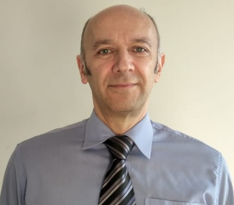
PBD1Medição e monitoramento das emissões veiculares em laboratório e em condições reais de tráfego, utilizando procedimentos e instrumentação específicos para coleta, análise e avaliação dos dados obtidos em diferentes condições de operação.
Colaboração em pesquisa computacional, sustentabilidade e modelagem ambiental.
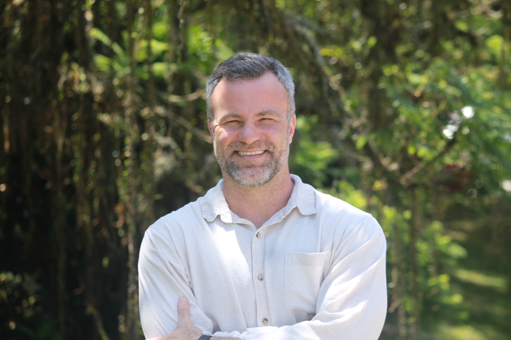
COAAtuo na elaboração de inventários de emissões e modelagem da qualidade do ar, realizando o levantamento e análise de dados sobre fontes emissoras e poluentes atmosféricos. Desenvolvo simulações para compreender a dispersão dos poluentes e seus impactos na qualidade do ar, contribuindo para estudos e avaliações ambientais.
Confira os produtos desenvolvidos no âmbito do projeto.
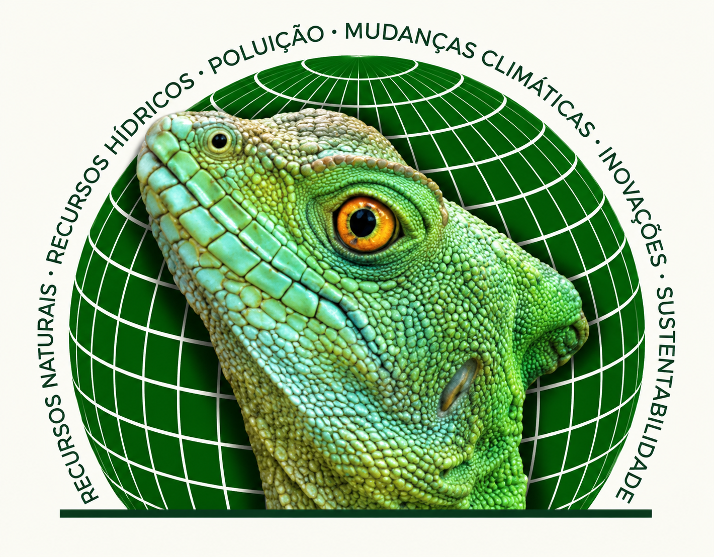
O estudo apontou maior reatividade das emissões veiculares no Brasil em relação aos EUA, validou a consistência dos perfis químicos do modelo VEIN e recomendou novos estudos sobre a especiação das emissões veiculares brasileiras.
O estudo apresenta um inventário de emissões veiculares no Brasil (1960–2100), utilizando o modelo VEIN, e identifica discrepâncias em inventários globais. Destaca que o aumento da temperatura intensifica as emissões evaporativas de NMHC, cuja oxidação em CO₂ contribui para um mecanismo de retroalimentação positiva.
A revisão aborda os mecanismos de formação do ozônio troposférico, destacando as interações NOx-COVs, emissões veiculares e condições urbanas. Identifica lacunas na formação secundária de COVs, nas medições de emissões, na estimativa de compostos voláteis intermediários e na relação entre ozônio e aerossóis orgânicos secundários (SOA).
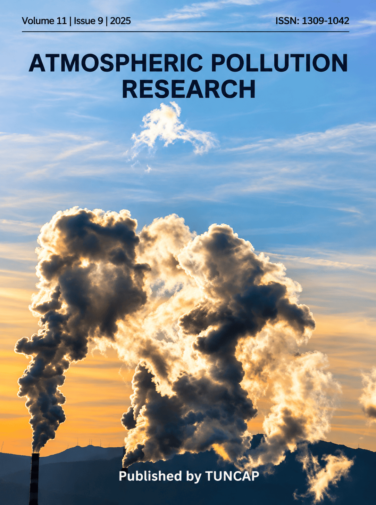
O estudo analisa as fontes de precursores de ozônio em São Paulo, destacando a influência dos NOx e COVs na formação de O₃. Identifica efeitos distintos conforme a fonte emissora, especialmente em regiões industriais como Paulínia, e reforça a importância das emissões locais e regionais no controle da poluição atmosférica.

O estudo analisa eventos de ondas de calor e ozônio troposférico em São Paulo, identificando aumento das concentrações de O₃ em 62% dos locais e da temperatura máxima em 90%. Os resultados destacam excedências aos limites da OMS e a necessidade de estratégias de mitigação da poluição atmosférica e das ondas de calor.
O trabalho apresenta um inventário de emissões de fontes industriais. O produto, cujo os dados estão disponíveis em (GitHub - Martins-UTFPR/Brazil-industrial-emissions-inventory_v2: Industrial atmospheric emission inventory – Brazil), será utilizado nos estudos e nas simulações a serem realizadas.
Divulgação das atividades e estudos desenvolvidos pelo projeto.
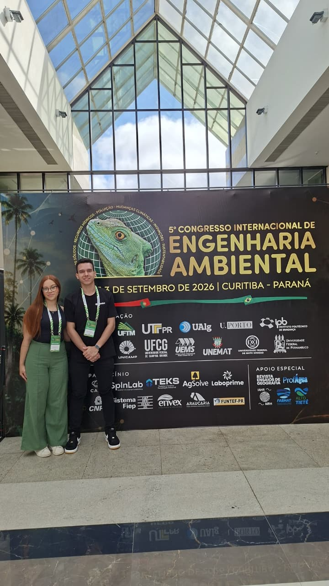
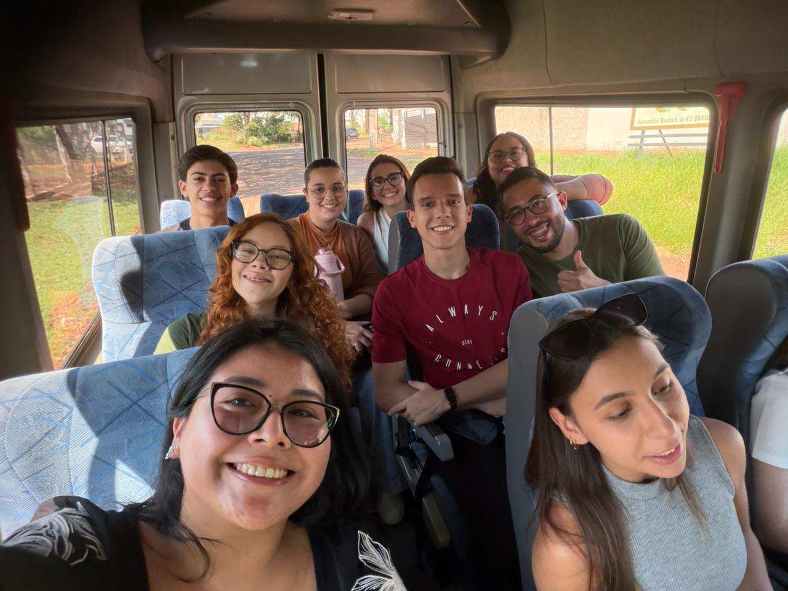
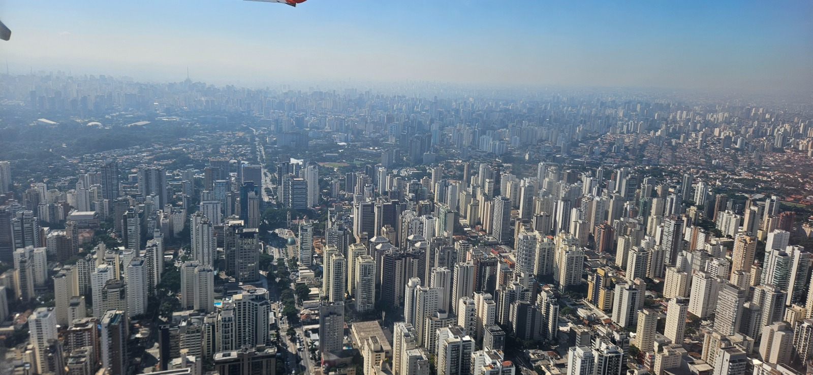
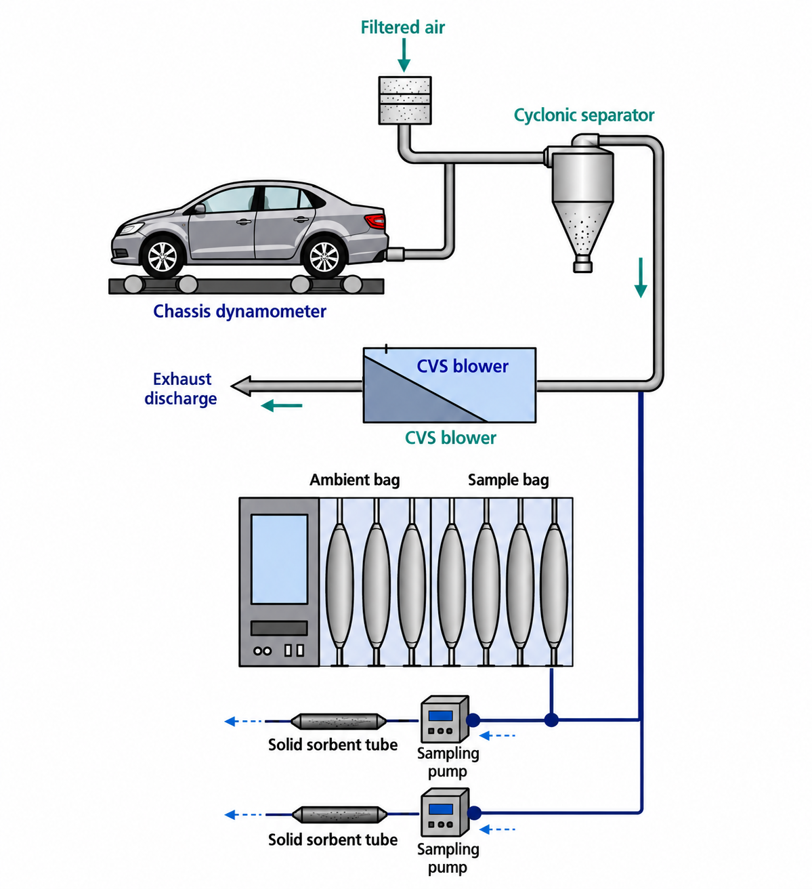
O Projeto O₃ MOVER conta com apoio científico, tecnológico e institucional de universidades, empresas automotivas, centros de pesquisa e organizações voltadas à inovação ambiental.
Este trabalho tem o apoio direto das Instituições UTFPR, IAG/USP, UFMG, UNIFEI, UERJ, EPUSP, UFSC, das empresas VOLKSWAGEN do Brasil Indústria de Veículos Automotores LTDA, RASTECH Automação e Comércio LTDA, Robert BOSCH Limitada e STELLANTIS Automóveis Brasil LTDA, da Fundação de Desenvolvimento da Pesquisa (Fundep), coordenadora do programa Mover – Linha V, processo [27192*83]. Agradecemos também, especialmente ao Alexandre Suplicy pela disponibilização das imagens utilizadas no desenvolvimento do website.